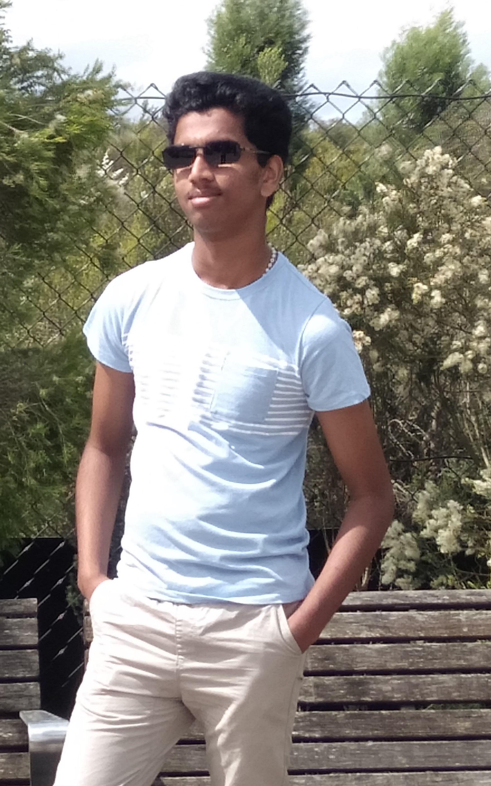

Hi, as you could gather from the title my name is Albert Mathew, I was born in the southern part of India, Kerala; to two Malayalam speaking parents and an older sister. Currently living near Cranbourne studying Bachelor of IT; graduated from Salesian College in 2021. My hobbies include but is not limited to playing Valorant, casual football (soccer) and listening to music, however, most of my time is spent watching movies or YouTube. I once had two pet birds however one died from a wild bird attack while the cage was left outside and the other one flew away not too long after that.
My interest in information technology was inspired and cultivated through my general interest in the technology that surrounds us every day from the smart tv in the living room to the small device in our hands that connects us to the entire world through a couple of clicks. However, the flexibility and freedom the IT world offers was also a major contributor to my decision, the luxury to work at home or work while travelling allures me to this field. Also, like everyone else I like money, and IT presents a very profitable future for whoever endeavours in it as the demand for technological specialists will only grow. Thus, I applied for a bachelor of IT and RMIT was the first to respond, as such I enrolled and started my journey in the IT field.
I expect to learn about cyber security as that section of IT intrigues me; the idea of protecting computing systems, data, and networks from potential cyber-attacks. I have also heard that cyber is one of the highest paying IT jobs available, making that another incentive. I am also interested in VR and AR which is having a huge uprising in recent years, making that another practical option. The possibility of delving deeper into the human interface of technology to make the experience more authentic seems too futuristic even though it is present as of now; I hope that this course dives into these topics and explores the possibilities of technology.
